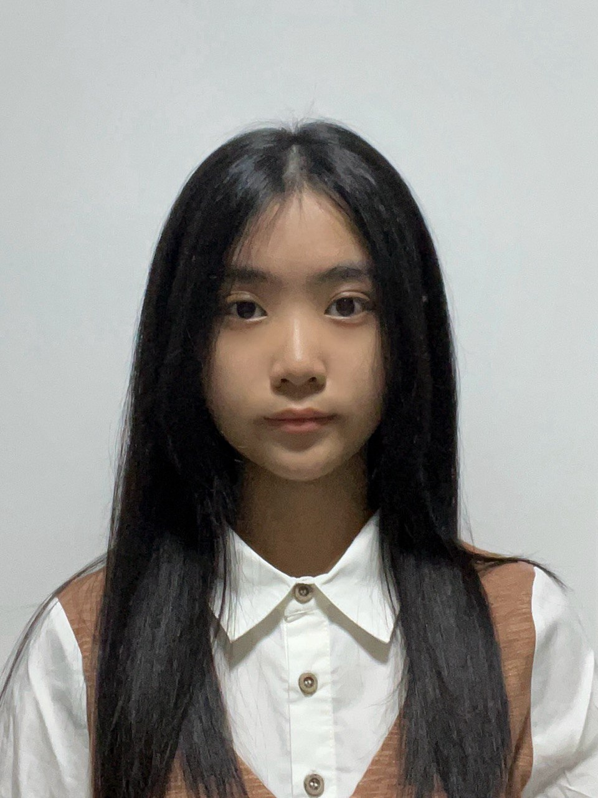

Hi, I’m Yu Lin
Information Technology student • Team player • Passionate developer
About Me
I’m Yu Lin, a Final Year Information Technology student at Ngee Ann Polytechnic, specializing in Software Engineering. I’m passionate about web development and design, and I’m eager to grow professionally and contribute to meaningful projects.
Education
Ngee Ann Polytechnic, Singapore (2023 – Present)
Diploma in Information Technology (Software Engineering Specialization)
Cumulative GPA: 3.12
Bedok South Secondary School (2018 – 2022)
GCE “O” Level Certificate: 14 points
Skills
Languages
• Fluent in English & Mandarin (Written & Spoken)
Software & Tools
• Microsoft Office (Word, Excel, PowerPoint, Power BI)
• VS Code, C#, Python, HTML/CSS/JS, SQL, Java (Android Studio)
• Node.js, React.js
• Adobe XD, Photoshop, Figma, Canva